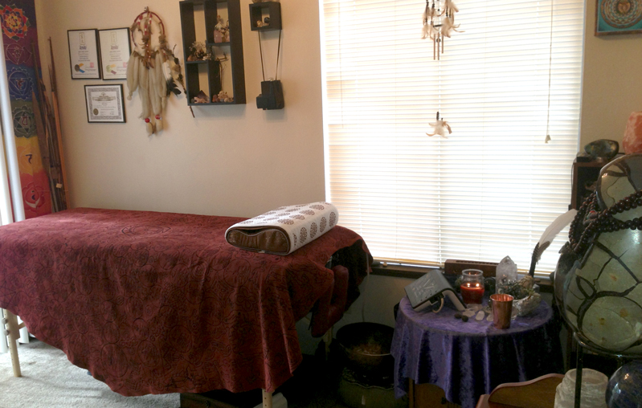

Welcome to Art of the Earth!
Art of the Earth is proud supplier of stones, tools and handcrafts that are tailor made for the praticing spiritualist. All of our items are crafted with percision and more importantly with channeled energies in mind that bring to you the things you truly need - even before you knew you needed them.
If you don't find something with the propper appeal on our Shamanic Tools page then please feel free to submit a custom order via the Custom Make portion of our site!
For those looking to work face-to-face with our company, or to negotiate specific detials with a more personable appraoch, the Contact Us page will get you in touch with us or provide you the address so you can swing by yourself.
All crafts mage by Art of the Earth are handmade by Robin D. Dolan and use real raw materials. No stones or gems shown in our products were created with imitations or colored glass, these are 100% geniune geological earth peices. Due to the hand made nature of our supplies no two peices will be exactly the same.
We also provide services, such as Reiki and Chakra healing, which will be discussed with more detail on the About Art of the Earth page of the site.